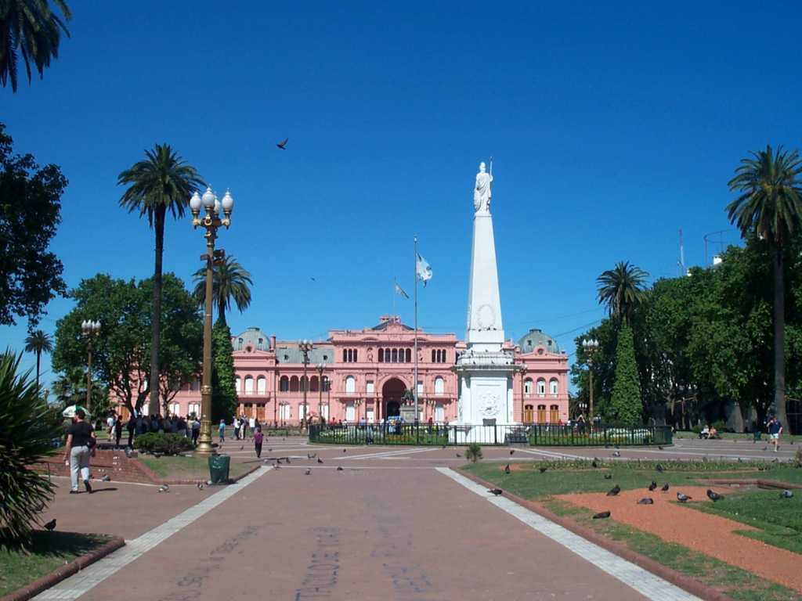
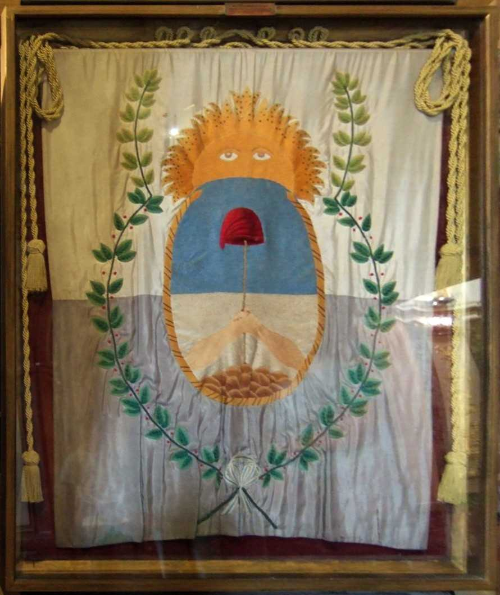
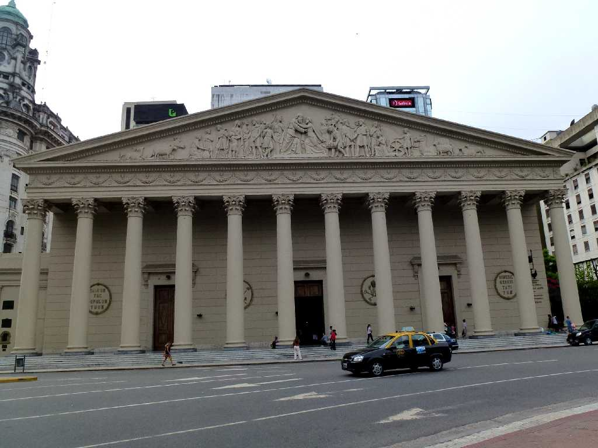
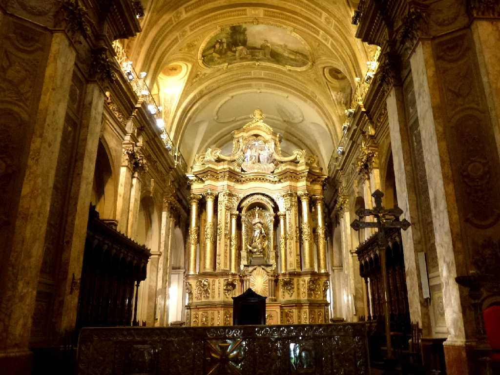
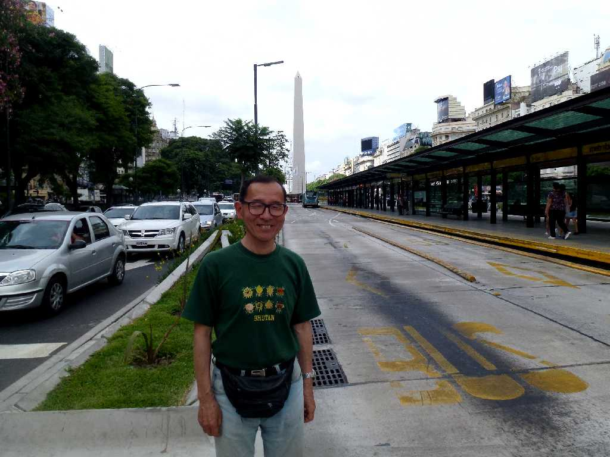
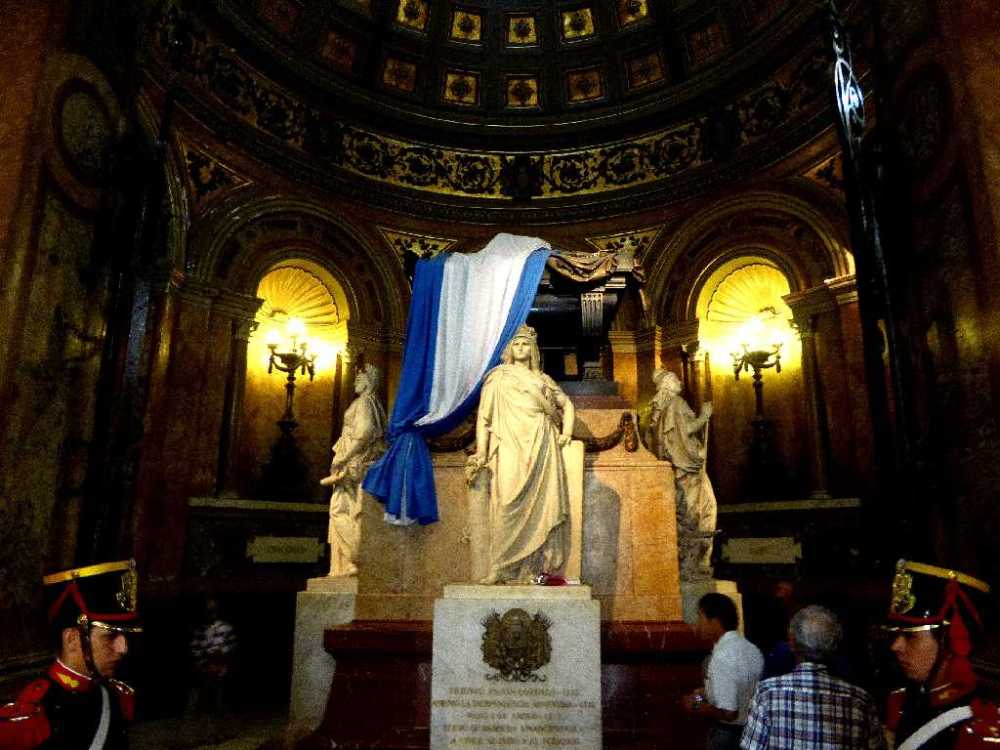
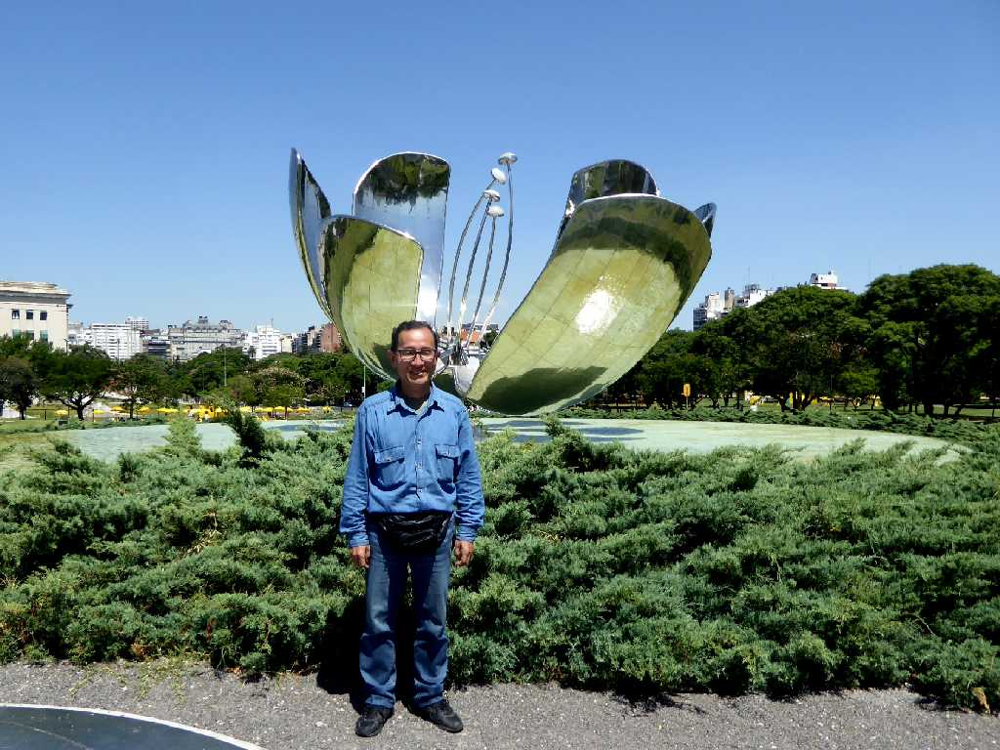
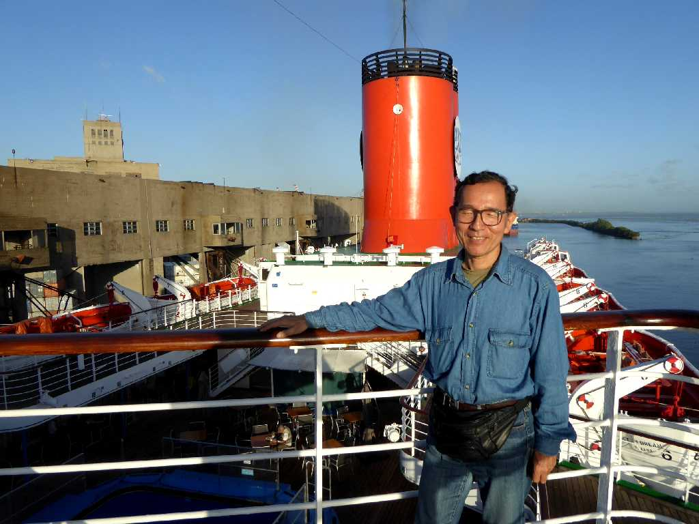

February 1995 Pirámide de Mayo Casa Rosada Palacio de Correos Buenos Aires
五月のピラミッドとコレオス宮殿を改築したアルゼンチンの大統領官邸ピンクハウス



Bandera de los andes Metropolitan Cathedral Buenos Aires
メトロポリタン大聖堂にあるアンデスの旗
Tango
本場のアルゼンチンタンゴの夕べを楽しんだがその足使いには驚かされる



Metropolitan Cathedral
パタゴニア縦断５,０００ｋｍバスの旅で南米周遊以来約２０年ぶりの再訪問

Altar Metropolitan Cathedral
メトロポリタン大聖堂の枢機卿が２０１３年３月に南米初のローマ法王フランシスコ１世となった

February 22 2014 Buenos Aires

Metropolitan Cathedral Buenos Aires
地球一周の船旅でパタゴニア縦断の旅以来２年ぶりの再訪問

February 14 2016 Floralis Generica
花のすべてと云われる２００２年に創られたアルゼンチン自慢の花のオブジェ

February 14 2016 Porto de Buenos Aires
地球一周の船旅出港６０日目２７,４９０ｋｍ航行しブエノスアイリス港に着岸